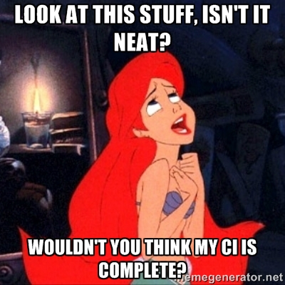
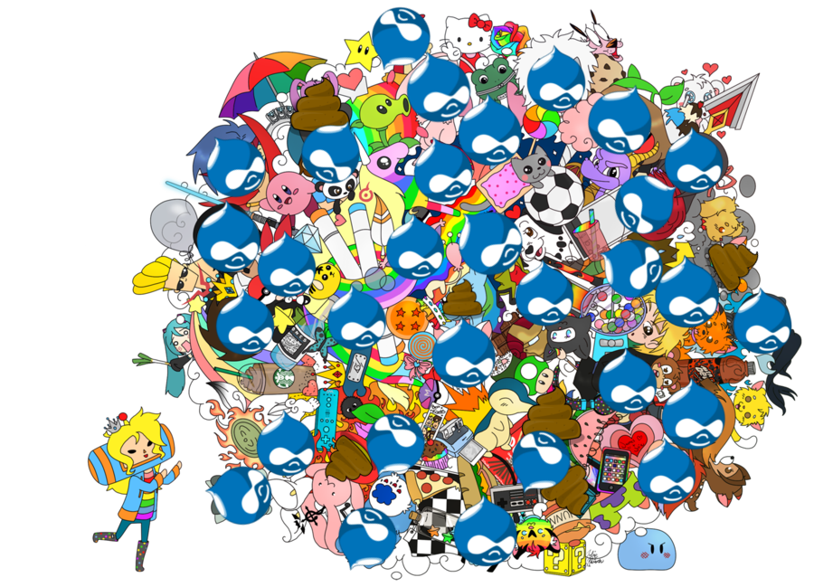

PrometSource
+ Drupal
+ Continuous Integration
do it yourself
do it now.
What CI means to Promet.
Why it is important.
Allan's 10 principles of CI.
Live demo.
We would like to know what you know.
"I am here because..."
a.)"I heard the phrase 'continuous integration' and want to know if I should care."
b.)"I am sold on CI and want to know where to start."
c.)"My CI set up is pretty sweet and I want to feel smug about how much better I am doing it."
d.)"I have no idea."
Why you should trust us...
* you shouldn't. You should read books like "Continuous Delivery".Allan Chappell
Drupal Solutions Architect

Drupal User: 368854
Twitter: @general_redneck
Blog: GeneralRedneck.com
Michelle Krejci
Developer, Curmudgeon

Find Craychee on Drupal.org
Twitter: @dev_meshev
Mad props to
Will Milton
Solutions Architect, Guru, Wizard

Github: https://github.com/winmillwill
Lauren, how much does our audience know?
If you have questions...
Remember to Tweet!
#DIYciQA
We will pick several for the end of the show.
back to that continuous...
what?
Often portrayed in terms of:

Or
Or

When I first started trying to "do" CI, I started collecting CI tools.
I wasn't the only one.
We were all trying to solve the same problem.
But
Continuous Integration.
is not primarily about cool toys.
At
PrometSource
continuous integration means...
Finding opportunities to
inject
small bits of
Quality Assurance
into our development process
at
every
stage.That's it.
LMGTFY
* Let Me Google That For You
Continuous integration is the process by which PrometSource works to improve itself.
Wait. What exactly is it again?

What is CI?
- Revision Control
- Build Automation
- Automate Deployment
- Self-Testing Build
- Testing in a Clone of Production
- Frequent Commits
- Code Consolidation
- Fast Builds
- Build Availability
- Test Result Availability
Again!
If you have questions...
Remember to Tweet!
#DIYciQA
We will pick several for the end of the show.
Revision Control

Courtesy of Joefleming.net
- Version Branching should be minimized.
- Allows your developers to integrate their code easily.
- This is the base of what Continuous Integration is built around.
Build Automation
- A single command should have the capability of building a system.
- Should be buildable from a fresh checkout.
- Allows rapid development with a fast repeatable automated process.
Automate Deployment
- Build an environment on a trigger.
- Automated process is faster than manual.
- Less mistakes, always the same.
- Usually provides an automated contingency plan if it fails.
Jenkins

Self-testing Build
- When a build is created, tests should run to confirm that it behaves the way developers expect it to.
PHPUnit
- Popular unit testing software.
- Allows functional and other types of testing.
- Can be used with other software like Selenium or curl to facilitate other testing.
Testing in a Clone of Production
- Environmental changes can lead to failures.
- If a copy cannot be provided, a scalable version reduces risk.
- Use configuration management tools to configure all builds.
Chef
- One thing that makes Vagrant configurable.
- Allows version controlled configuration!
- Use to build like environments and quickly discern differences
Frequent Commits
- Makes debugging easier.
- Better history.
- Easier to merge, move, add, and remove changes.
- Makes Code Consolidation easier.
Code Consolidation
- Every user should commit to a baseline once a day.
- Helps tests catch problems early.
- Less problems merging code.
- Developers should expect broken features. (process can manage this)
Fast Builds
- Developers shouldn't be kept waiting.
- Resources on automatic builds shouldn't be kept waiting.
Build Availability
- It is more time effective to have environments prebuilt and "checked out" than building on the fly.
- Builds available for Stakeholders is a must.
- Everyone should be able to access/use the latest build.
Test Result Availability
- Confidence in product.
- Provides a "Warranty".
- Developers can find problems earlier.
Okay, we admit,
we do have cool toys.
Chef
version controlled configuration
build like environments and dicern differences
Checkout our Drupal cookbook:https://github.com/promet/drupal_cookbook
https://github.com/promet/drupal_cookbookVagrant
build a system in a single command
rapid development with a fast repeatable automated process
Behat
Behavior driven development
develop against user stories
Like so:
@api @javascript
Feature: View news.
In order learn more about the business,
As an anonymous user,
I need be able to view the latest news.
Background:
Given I am an anonymous user
And "article" nodes:
| title | field_article_subtitle | body |
| Article One | This is a subtitle. | This is a description. |
Scenario: Navigate to products from the front page and see all residential products.
Given I am on the homepage
When I click "Latest news"
Then I should see the heading "Latest News"
And I am at "/news"
And I should see the text "Article One"
Like so:
@api @javascript Feature: View news. In order learn more about the business, As an anonymous user, I need be able to view the latest news. Background: Given I am an anonymous user And "article" nodes: | title | field_article_subtitle | body | | Article One | This is a subtitle. | This is a description. | Scenario: Navigate to products from the front page and see all residential products. Given I am on the homepage When I click "Latest news" Then I should see the heading "Latest News" And I am at "/news" And I should see the text "Article One"
Ask Away!
Look at MOAR Resources!
- Vagrant (http://www.vagrantup.com/)
- Drupal Cookbook (https://github.com/promet/drupal_cookbook)
- PHPUnit (http://phpunit.de/manual/3.7/en/installation.html)
- Jenkins (http://jenkins-ci.org/)
- Using drush to synchronize and deploy sites (https://drupal.org/node/670460)
- Headless Selenium (https://github.com/generalredneck/headless-selenium)
- Behat (http://behat.org/)
- Behat extension for Drupal (http://dspeak.com/drupalextension/drupalapi.html)
- PhantomJS (http://phantomjs.org/)
- phpspec (http://www.phpspec.net/)